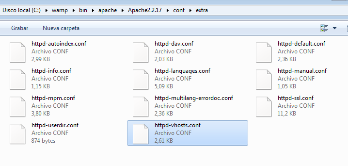
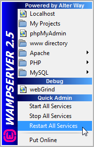

Overview
The following guide will show how to install ProcessMaker 3.0 on Windows using WAMPServer. This guide also applies to other Windows-Apache-MySQL-PHP stacks, such as XAMPP. However, it is recommended to use WAMPServer because of its compatibility with ProcessMaker and similar software configuration with the LAMP stack.
Requirements
| Note: Please check our Supported Stacks page before installing. This page provides detailed information on the operating system, database, and application server combinations that have been tested and certified by ProcessMaker. |
- A working WAMP stack, the following 32-bit WampServer stacks are suggested for Processmaker version 3.0.x.x:
WampServer Version Apache Version MySQL Version PHP Version Download Link Wamp 2.5 2.4.9 5.6.17 5.5.12 Download Here Wamp 2.4 2.4.4 5.6.12 5.4.12 Download Here - A ProcessMaker tarball (.tar.gz), which can be downloaded at ProcessMaker 3.0.
- Administrator access on Windows Vista or Windows 7.
- A compatible web browser: Google Chrome 42-43, Mozilla Firefox 37-38 or Internet Explorer 10-11. For more information, please check our Supported Browsers page.
| Warning: ProcessMaker is not compatible with MySQL STRICT mode, which is enabled by default as of MySQL 5.6.6. Read the Turning Off MySQL STRICT Mode section to learn how to disable it. |
Recommendations
Please take notice of the following PHP restrictions:
- Windows Operating Systems x86 only supports 32-bits timestamps. The valid range of a 32-bits timestamp is typically from Fri, 13 Dec 1901 20:45:54 UTC to Tue, 19 Jan 2038 03:14:07 UTC, using out of range values may cause issues. For more information about this problem, go here.
- Experimental x64 builds of PHP 5 in Windows x86 do not provide 64-bit integer or large file support.
- Prior to PHP 5.1.0, not all platforms support negative timestamps, therefore your date range may be limited to no earlier than the Unix epoch. This means that e.g. dates prior to Jan 1, 1970 will not work on Windows, some Linux distributions, and a few other operating systems.
Installing ProcessMaker
After downloading the most recent ProcessMaker tarball from ProcessMaker distribution page. Move the extracted folder to: c:/opt/processmaker and keep note of this location.

Configuring WampServer
After installing WampServer and extracting the ProcessMaker tarball, WampServer needs to be configured to work succesfully with ProcessMaker.Configuring Apache
Edit the Apache httpd.conf file located at c:/wamp/bin/apache/Apache.X.v.v/conf/httpd.conf

Uncomment the following modules (remove the # symbol at the beginning of each line):
LoadModule deflate_module modules/mod_deflate.so
LoadModule expires_module modules/mod_expires.so
LoadModule filter_module modules/mod_filter.so
LoadModule headers_module modules/mod_headers.so
LoadModule rewrite_module modules/mod_rewrite.so
LoadModule vhost_alias_module modules/mod_vhost_alias.so
At the bottom of the file, locate the #Virtual hosts line and uncomment this line:
Adding ProcessMaker to Apache

The next step is to add the ProcessMaker location to Apache Vhosts configuration. Open c:/wamp/bin/apache/Apache.X.v.v/conf/extra/httpd-vhosts.conf and add the following at the bottom of the file:
Replace your_ip_address with the IP number or domain name of the server running ProcessMaker
If only planning on running and accessing ProcessMaker on your local machine, then use the IP address 127.0.0.1. If using ProcessMaker on a machine whose IP address might change (such as a machine whose IP address is assigned with DHCP), then use *:80, which represents any IP address and the standard port 80. If not using port 80, then it is necessary to also specify the port number.
If your DNS or hosts file has a defined domain for ProcessMaker, then use that domain for your_processmaker_domain. Otherwise, use the same IP address for your_processmaker_domain as was used for your_ip_address.
More instruction are available at Apache Configuration.
Configure PHP
Edit the php.ini configuration file located at c:/wamp/bin/php/php.X.v.v/php.ini
Uncomment the following lines to enable the LDAP and SOAP extensions:
extension=php_soap.dll
Each ProcessMaker session needs a minimum of 120MB RAM to run properly, so set the memory_limit to 120M or greater:
In order to upload Input Documents, upgrade ProcessMaker and add plugins and languages, file_uploads need to be enabled:
ProcessMaker needs to use PHP's short opening tags:
If planning on uploading large Input Documents while running processes, the max_post_size and upload_max_filesize should be increased to more than the default 2MB. For instance, if planning on uploading files as large as 16MB, then:
upload_max_filesize = 16M
Finally, to confirm the configuration changes save the file and make left-click on the WampServer icon, choose "PHP", then "Version" and click on the "php5.x.x" menu item.

Restarting the server and installing ProcessMaker
After saving all files, restart WAMPServer by clicking on the WampServer logo and choosing "Restart all services"

After restarting the WAMPServer, enter to your ProcessMaker address in a web browser. Then, follow the ProcessMaker Configuration instructions to setup ProcessMaker on your server and login.